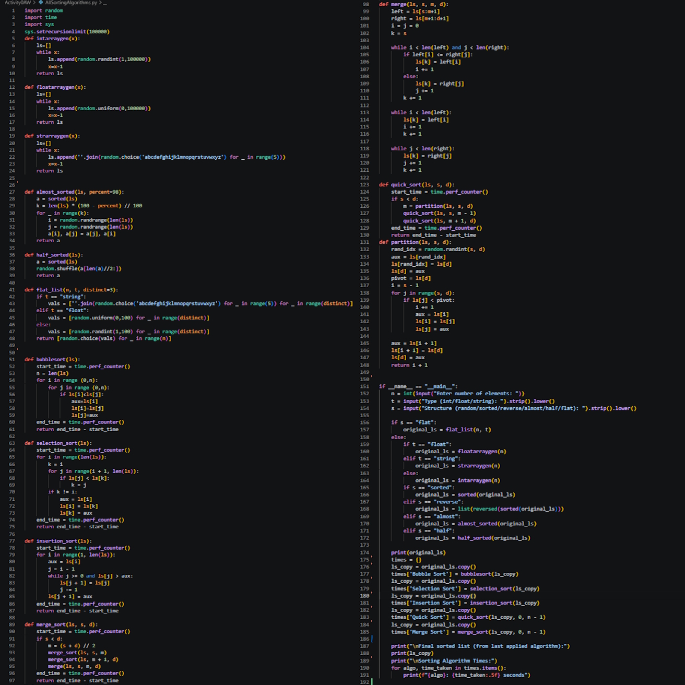

In this project, I implemented and compared the performance of 5 sorting algorithms in Python: Bubble Sort, Insertion Sort, Merge Sort, Quick Sort and Heap Sort.
The goal is to compare theoretical time complexity and the actual execution time of each algorithm on the same list of random integers.
